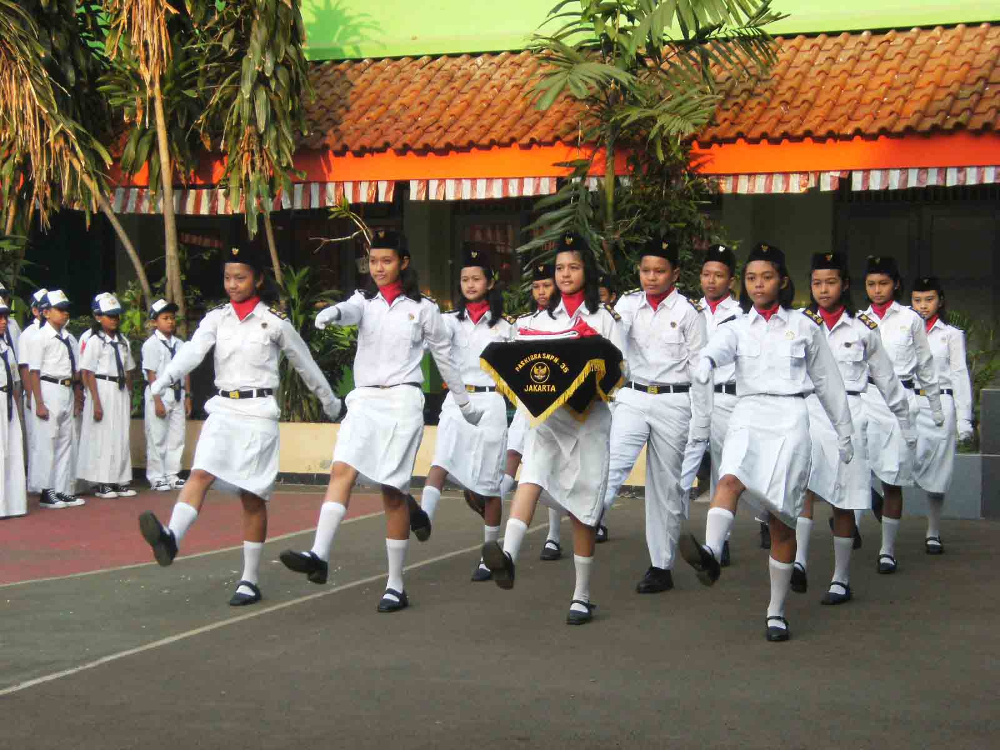

Ekstrakurikuler Gerakan Pramuka
Sejarah Pramuka
Pramuka adalah singkatan dari Praja Muda Karana, yang artinya Orang Muda yang Suka Berkarya. Pendidikan kepramukaan adalah proses pembentukan kepribadian kecakapan hidup, dan akhlak mulia pramuka melalui penghayatan dan pengamalan nilai-nilai kepramukaan (Peraturan Menteri Pendidikan dan kebudayaan No. 63 Tahun 2014 Tentang Pendidikan Kepramukaan).

Pramuka pertama kali dikenalkan oleh Robert Baden Powell pada tahun 1908 dalam sebuah buku berjudul Scouting For Boys yang isinya berupa gagasan tentang pendidikan luar sekolah untuk anak-anak. Buku ini cepat tersebar di Inggris dan negara-negara lain yang kemudian berdiri organisasi kepramukaan yang semula hanya untuk laki-laki dengan nama Boys Scout. Tahun 1912 didirikan organisasi kepramukaan untuk wanita dengan nama Girl Guides.
Pramuka di Indonesia mulai dibentuk secara resmi pada tahun 1945 dengan nama Pandu Rakyat Indonesia. Ipindo merupakan federasi bagi organisasi kepramukaan putra, Pada 1953 Ipindo berhasil menjadi anggota kepramukaan sedunia sedangkan bagi organisasi puteri terdapat dua federasi yaitu PKPI (Persatuan Kepanduan Puteri Indonesia) dan POPPINDO (Persatuan Organisasi Pandu Puteri Indonesia). Terdapat banyak organisasi-organisasi kepanduan di Indonesia yang menimbulkan perpecahan, maka pada tahun 1961 organisasi-organisasi dipersatukan dalam satu wadah Gerakan Pramuka melalui Keputusa Presiden RI No. 238 Tahun 1961 tentang Gerakan Pramuka.
Tujuan dan Fungsi Gerakan Pramuka
Gerakan Pramuka merupakan wadah pembinaan bagi anak-anak dan pemuda Indonesia agar menjadi manusia yang berkepribadian dan berwatak luhur serta tinggi mental, pantang menyerah, moral budi pekerti, dan kuat keberagamaan, sehat jasmani dan rohani serta mempunyai tanggung jawab kemasyarakatan dan kebangsaan. Dalam AD/ART Gerakan Pramuka pada Kwartir Nasional Gerakan Pramuka disebutkan tujuan gerakan Pramuka adalah sebagai berikut:
a. Gerakan Pramuka bertujuan mendidik anak-anak dan pemuda Indonesia dengan Prinsip Dasar dan Metode Kepramukaan yang pelaksanaannya di sesuaikan dengan keadaan, kepentinagn dan perkembangan bangsa dan masyarakat Indonesia, agar mereka menjadi manusia berkepribadian, berwatak dan berbudi pekerti luhur yang:
- Kuat mental, tinggi moral, beriman dan bertaqwa kepada Tuhan Yang Maha Esa.
- Tinggi kecerdasan dan mutu keterampilan.
- Kuat dan sehat jasmani.
b. Warga negara republik Indonesia yang berjiwa Pancasila, setia dan patuh kepada negara kesatuan RI, serta menjadi anggota masyarakat yang baik dan berguna, yang membangun dirinya sendiri serta bersama-sama bertanggung jawab atas pembangunan bangsa dan negara.
Palang Merah Remaja (PMR)
Palang Merah Remaja (disingkat PMR) adalah wadah pembinaan dan pengembangan anggota remaja PMI, yang selanjutnya disebut PMR.Terdapat di PMI kota atau kabupaten di seluruh Indonesia, dengan anggota lebih dari 5 juta orang, anggota PMR merupakan salah satu kekuatan PMI dalam melaksanakan kegiatan-kegiatan kemanusiaan dibidang kesehatan dan siaga bencana, mempromosikan prinsip-prinsip dasar gerakan palang merah dan bulan sabit merah internasional, serta mengembangkan kapasitas organisasi PMI.
Kebijakan PMI dan federasi tentang pembinaan Remaja bahwa:
- Remaja merupakan prioritas pembinaan, baik dalam keanggotaan maupun kegiatan kepalangmerahan.
- Remaja berperan penting dalam pengembangan kegiatan kepalangmerahan.
- Remaja berperan penting dalam perencanaan, pelaksanaan kegiatan dan proses pengambilan keputusan untuk kegiatan PMI.
- Remaja adalah kader relawan.
- Remaja calon pemimpin PMI pada masa depan.
Palang Merah Remaja atau PMR adalah suatu organisasi binaan dari Palang Merah Indonesia yang berpusat di sekolah-sekolah ataupun kelompok-kelompok masyarakat (sanggar, kelompok belajar, dll.) yang bertujuan membangun dan mengembangkan karakter Kepalangmerahan agar siap menjadi Relawan PMI pada masa depan.
PASKIBRA

Aksi Paskibra alias Pasukan Pengibar Bendera di setiap perayaan Kemerdekaan RI selalu jadi pusat perhatian. Ada rasa bangga pada siswa-siswi SMA yang terpilih ini, apalagi bila mereka berhasil menjadi anggota Paskibraka, yang bertugas di Istana Negara, di hadapan Presiden RI.
Sosok-sosok tegap mereka saat berbaris dan mengibarkan Bendera Merah Putih memang inspiratif, terutama buat si kecil. Moms bisa menyalurkan minatnya lewat kegiatan ekstrakurikuler atau ekskul di sekolah. Ekskul Paskibra, seperti juga PMR, Pramuka dan ekskul di bidang seni dan olahraga bukan sesuatu yang asing di sekolah dasar.
Mengikuti ekskul Paskibra membuat si kecil mendapatkan banyak manfaat, antara lain:
Melatih kedisiplinan. Yap, dia harus berlatih tepat waktu, mengikuti gerakan dengan benar dan kompak, mengikuti instruksi dan banyak lagi. Setiap kesalahan ada konsekuensinya, dan ketidakdisiplinan akan sangat berpengaruh pada keberhasilan tugas mereka.
Menguatkan fisik. Berlatih baris-berbaris di lapangan terbuka secara rutin tentu akan menguatkan fisik si kecil. Belum lagi latihan olahraganya. Moms tentunya perlu mendukung dengan asupan nutrisi yang baik dan mengingatkan si kecil untuk cukup beristirahat.
Memiliki rasa cinta tanah air. Anggota Paskibra tidak hanya harus bisa berbaris dan mengibarkan bendera. Ia juga akan dibekali wawasan tentang negara dan tanah airnya, membuat si kecil semakin mengenal dan mencintai Indonesia.
Bersosialisasi. Dalam ekskul Paskibra si kecil tidak hanya bisa memiliki banyak teman, tetapi juga belajar bersosialisasi dan berkomunikasi dengan baik. Bayangkan apa jadinya bila pasukan pengibar bendera tidak kompak. Si kecil juga berkesempatan bertemu dengan teman-teman dari kota atau provinsi lain bila ia mengikuti kegiatan dalam skala besar.
Memupuk jiwa kepemimpinan. Si kecil tak hanya berlatih mengikuti instruksi, ia juga bisa berperan sebagai pemimpin yang memberi aba-aba buat kelompoknya. Saat menjadi senior, ia dituntut untuk membimbing juniornya.
Membanggakan Moms & Dads. Pasti bangga melihat si kecil yang disiplin, kuat, tangkas, cerdas dan mandiri. Moms & Dads juga mungkin terharu melihatnya saat bertugas di lapangan upacara. Makin bangga lagi bila ia tumbuh dan terpilih sebagai Paskibraka di tingkat Nasional.
PATROLI KEAMANAN SEKOLAH (PKS)
Patroli Keamanan Sekolah atau dapat disingkat PKS adalah salah satu jenis kegiatan ekstrakurikuler yang umum ditemui di sekolah-sekolah di Indonesia.
Pada tanggal 5 Mei 1975 dibentuklah suatu wadah yang bernama Polisi Keamanan Sekolah.
Pada saat itu ruang lingkup tugas yang diemban Polisi Keamanan Sekolah masih sempit, yaitu hanya sebatas menjaga keamanan sekolah dari tindakan-tindakan yang dilakukan oleh siswa tersebut.
Untuk memperluas ruang lingkup dari tugas Polisi keamanan sekolah, maka pada tanggal 5 Juni 1975 Polisi Keamanan Sekolah diganti namanya dengan Patroli Keamanan Sekolah dengan persetujuan dari Bapak Letkol. Anton Sudjarwo. Ruang lingkup dari Patroli kemanan Sekolah mengalami penyempitan dan perluasan.
Tugas dipersempit dibidang keamanan, dimana tugas yang diemban Patroli Keamanan Sekolah hanyalah sebagai pengawas atau pemantau dari tindakan-tindakan negative yang terjadi di sekolah untuk selanjutnya dilaporkan kepada pihak guru. Sedangkan perluasannya yaitu pada bidang kelalulintasan, dimana seluruh anggota Patroli Keamanan Sekolah wajib mengetahui peraturan-peraturan kelalulintasan.
Dalam kegiatan ekstrakurikuler ini, para siswa dilatih menjadi semacam "polisi sekolah". Tidak hanya itu saja banyak sekali pengetahuan yang didapat oleh seorang anggota PKS. Mereka diberi pelajaran mengenai Narkoba dan Kenakalan Remaja, supaya mereka tahu betapa membahayakannya Narkoba itu. Latihan Baris berbaris, kedisiplinan, kekompakan, terutama Gerakan-gerakan pengaturan lalu lintas, yang biasanya di terapkan di lingkungan sekolah masing-masing. Selain itu semua tugas PKS juga menjaga keamanan dan ketertiban dilingkungan sekolah.
Tugas PKS
- Membantu tugas Patroli dalam menyelenggarakan pengaturan Lalu Lintas di jalan raya/umum disekita lingkungan sekolah masing-masing, terutama dalam membantu penyebrangan jalan terhadap pemakai jalan sebagai pejalan kaki khususnya para pelajar dilongkungan sekolah masing-masing pada waktu akan masuk dan tutup sekolah.
- Ikut serta secara aktif membantu tugas Polisi dalam menyelenggarakan, menciptakan dan memelihara keamanan dan ketertiban dilingkungan intern sekolah masing-masing, sehingga terwujud ketentraman yang dinamis antar siswa-siswi dan guru pengajar guna mendukung proses belajar mengajar.
Fungsi PKS
- Segala Usaha kegiatan untuk melindungi dan mengamankan lingkungan intern sekolah guna mendukung proses belajar mengajar.
- Segala usaha dan kegiatan untuk melindungi dan mengamankan pemakai jalan sebagai pejalan kaki khususnya para pelajar pada waktu penyebrangan jalan disekita lingkungan sekolah masing-masing, dengan cara melakukan kegiatan pengaturan lalu lintas terhadap pejalan kaki dan kendaraan bermotor yanglewat dilingkungan sekolah masing-masing adalah sebagai upaya untuk mencega terjadinya kecelakaan lalu lintas yang menimpa pejalan khusunya para pelajar yang menyeberang jalan dan membantu untuk meniadakan kemacetan/kesemrawutan lalu lintas dilingkungan sekolah masing-masing
Peranan PKS
Membantu Kepala Sekolah / Guru ditempat ia bersekolah dalam bidang keamanan dan ketertiban dilingkungan intern sekolah masing-masing sehingga terwujud ketentraman yang dinamis antar siswa-siswi dan guru pengajar guna mendukung proses belajar mengajar.
FUTSAL
Ekstrakurikuler ini merupakan salah satu ekstrakurikuler yang sudah lama di SMPN 1 Cilawu. Futsal adalah salah satu olahraga paling populer di kalangan anak muda sekarang, karena olahraga ini adalah turunan dari sepak bola tapi dengan jumlah pemain yang lebih sedikit dan luas lapangan yang lebih kecil. Di SMPN 1 Cilawu ekstrakurikuler futsal cukup digemari, tercatat lebih dari 40 siswa ikut serta dalam ekskul ini.
Latihan rutin dilaksanakan setiap hari kamis sore untuk pelatih pembina adalah Bapak Aris Anandito, S.Pd. Ekstrakurikuler futsal diadakan dengan tujuan menyediakan wadah untuk siswa menyalurkan hobinya dan menghadirkan corak positif kepada para siswa yaitu sifat-sifat sportifitas serta mencetak bibit-bibit baru olahragawan yang berprestasi di tingkat lokal, nasional maupun internasional.
BELA DIRI KARATE
Beladiri karate adalah sebuah cabang olahraga untuk memperdalam pengetahuan siswa/i SMPN 1 Cilawu tentang salah satu beladiri yang ada di Indonesia. Bela diri karate di kemas dalam bentuk ekstrakurikuler khususnya di SMPN 1 Cilawu. Ekskul beladiri karate adalah wadah bagi siswa/i yang baru ingin mengenal dan yang telah memilikii kemampuan dalam beladiri karate. Sehingga mereka bisa mengembangkan dan mengekspresikan diri mereka melalui beladiri karate ini. Ekskul beladiri karate tentunya terbuka untuk semua siswa/i SMPN 1 Cilawu baik yang sudah pandaii beladiri maupun yang belum pandai beladiri.
Tujuan adanya ekskul bela diri karate adalah:
- Wadah para siswa/i untuk mengembangkan minat dan bakat dalam beladiri karate
- Mengarahkan siswa/I agar melakukan kegiatan yang lebih positif
- Menyalurkan kemampuan dan meningkatkan prestasi
- Serta melatih mentalitas dan kedisiplinan diri pada siswa/i
Visi :
“membentuk karakter anak bangsa yang kreatif dan sportifitas dalam olahraga beladiri karate”